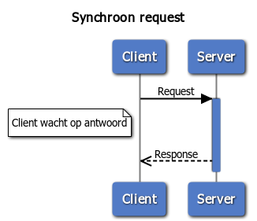

Dit hoofdstuk beschrijft de Digikoppeling als bouwsteen van de Digitale Overheid. de keten van alle
Digikoppeling-gerelateerde componenten die gegevensuitwisseling voor de Digitale Overheid invullen duiden we in
dit document aan als de de Digikoppeling-keten. In dit hoofdstuk worden de vormen van gegevensuitwisseling op
procesniveau beschreven.
2.1 Digikoppeling
als bouwsteen van de Digitale Overheid
De Nederlandse overheid werkt aan betere dienstverlening aan burgers en bedrijven met een basisinfrastructuur
voor de Digitale Overheid die is gebaseerd op services zoals beschreven in de Nederlandse Overheids Referentie
Architectuur (NORA). Een reden voor het gebruik van services is dat ze herbruikbaar en daardoor efficiënt zijn.
De basisinfrastructuur bestaat uit bouwstenen voor de dienstverlening aan burgers, aan bedrijven en de
inrichting van de informatiehuishouding van de overheid zelf. De bouwstenen beslaan drie pijlers:
-
Loketten en voorzieningen voor burgers.
-
Loketten en voorzieningen voor bedrijven.
-
Registraties in algemene zin, waaronder het stelsel van basisregistraties, inclusief voorzieningen zoals
onder meer Digilevering (abonnementen services) en Digimelding (terugmelding van wijzigingen of fouten aan
basisregistraties).
In dit document vatten we de loketten en voorzieningen voor burgers en bedrijven samen met het begrip
‘landelijke voorzieningen”. Om deze pijlers als samenhangend geheel te laten functioneren is het nodig dat zij
informatie kunnen uitwisselen’.
Digikoppeling maakt het mogelijk om berichten uit te wisselen, databronnen te raadplegen en te bewerken en
services aan te roepen en is daarmee een essentiële bouwsteen van de basisinfrastructuur van de Digitale
Overheid. Organisaties kunnen via Digikoppeling rechtstreeks (bilateraal) gegevens met elkaar uitwisselen. Vaak
zijn er extra schakels betrokken, zoals een sectoraal knooppunt of een intermediair.
Digikoppeling biedt een standaard voor het veilig uitwisselen van berichten tussen systemen. Het is dus niet
bedoeld om gegevens aan een eindgebruiker te tonen; dat gebeurt via een applicatie bij de eindgebruiker zelf.
Digikoppeling standaardiseert de inrichting van het berichtenverkeer zodat verschillende partijen berichten
kunnen uitwisselen, ongeacht om welke gegevens het gaat.
2.2 Opbouw van de Digikoppeling-keten
De Digikoppeling-keten bestaat uit:
-
Deelnemende publieke organisaties die gegevens met elkaar uitwisselen (partijen). Een partij kan een
service of resource aanbieden – in de rol van serviceaanbieder – of een service afnemen – in de rol van
serviceafnemer.
-
Intermediairs: organisaties die voor deze deelnemende organisaties bemiddelen in de uitwisseling van
gegevens. Partijen maken onderling (of via een intermediair) afspraken over de inhoud en vorm van de
gegevensuitwisseling.
-
Componenten die de Digikoppeling-keten vormgeven.
2.2.1 Partijen
Een partij is een (publieke) organisatie die gegevensdiensten via Digikoppeling aanbiedt aan andere
organisaties en/of afneemt van andere organisaties. Een partij (in de rol van serviceafnemer of
serviceaanbieder) is tevens het eindpunt van de Digikoppeling-keten. Partijen maken onderling of via een
intermediair afspraken over de samenwerking en over de gegevensuitwisseling.
De uitwisseling tussen een serviceaanbieder en een serviceafnemer moet altijd betrouwbaar/vertrouwd zijn,
ondanks of dankzij de betrokkenheid van intermediairs.
2.4 Componenten in de
logistieke Digikoppeling-keten
De volgende componenten maken onderdeel uit van de Digikoppeling-keten van berichtuitwisseling.
| Componenten |
Toelichting |
| Applicatie |
Een systeem waarmee gegevens worden geproduceerd, vastgelegd en gebruikt. |
| Broker of Enterprise Service Bus (ESB) |
Een component waarmee berichten worden gegenereerd, aangeboden, afgenomen, gemonitord en verwerkt. Dit
type systeem wordt gebruikt in de integratielaag. Een enterprise servicebus, broker of message handler
zijn voorbeelden van een dergelijke component. |
| Digikoppeling-adapter |
Een software-adapter voor middleware systemen die door een ICT-leverancier wordt geleverd en die de
Digikoppeling-koppelvlakstandaarden implementeert. De Digikoppeling-adapter handelt alle aspecten van de
berichtverwerking af, inclusief de versleuteling/ontsleuteling, ondertekening etc. Een broker of ESB
bevat vaak een (configureerbare) Digikoppeling adapter. |
| Gegevens |
Informatie die wordt beheerd en opgeslagen. Gegevens worden voor een specifieke uitwisseling in een
bericht geplaatst. |
| PKIoverheid certificaten |
Identificatie en authenticatie vindt plaats op basis van het PKIoverheidscertificaat. Zie voor nadere
uitleg Digikoppeling Identificatie en Authenticatie en Digikoppeling Gebruik en Achtergrond
Certificaten. |
| Servicecontract |
Een technisch formaat voor het vastleggen van afspraken over de inhoud van de gegevensuitwisseling
tussen partijen. Een servicecontract wordt vormgegeven d.m.v. een CPA (voor ebMS2 services), OAS voor
Restful APi's, en een WSDL (voor WUS services) en wordt ingelezen in de Digikoppeling-adapter. voor de
CPA stellen partijen samen een servicecontract op. |
Tabel 2: Componenten van de Digikoppeling-keten
N.B.: De Digikoppeling-voorzieningen (Het Digikoppeling portaal met de
Compliance Voorziening, het OIN register en het CPA register) vormen geen onderdeel van de Digikoppeling-keten
maar ondersteunen tijdens de ontwikkel- en testfasen en bij het uitgifte en raadpleegen van OIN's.
2.5 Uitwisselingsvormen
Uitwisselingsvormen onderscheiden we op alle niveaus van inhoud, logistiek en transport.
-
De business heeft op inhoudelijk niveau behoefte aan specifieke uitwisselingsvormen. Dat zijn veel
verschillende vormen die we in de volgende subparagraaf aan de hand van een tweetal kenmerken terugbrengen
tot een viertal primitieve business-interacties.
-
op logistiek niveau biedt Digikoppeling een beperkt aantal patronen voor uitwisseling. De tweede
subparagraaf licht deze patronen toe en geeft aan voor welke business-interactie deze toegepast moeten
worden.
-
Op transport niveau is in Digikoppeling voorgeschreven welke vormen van uitwisseling (protocollen)
toegepast worden. Deze worden hier niet behandeld.
2.5.1 Business-behoefte
Op business-niveau is er een veelheid aan uitwisselingsvormen waaraan behoefte bestaat. Deze zijn vaak
contextspecifiek. Soms zijn deze vormen ook specifiek voor een sector waardoor het loont om deze in een
sectorale berichtstandaard voor de inhoud van een bericht af te spreken (b.v. StUF, SuwiML en NEN3610)
. Een aantal proceskenmerken op business-niveau bepaalt welke door Digikoppeling geboden logistieke vormen
geschikt zijn. Zonder alle mogelijke behoeften uit te werken, behandelt deze sub-paragraaf wel de voor de
keuze van Digikoppeling belangrijke kenmerken:
- De impact op de serviceaanbieder is afhankelijk van de dienst die deze levert:
-
alleen informatie, die bevraagd kan worden; dat heeft geen impact op de aanbiedende organisatie;
-
het verwerken van een gevraagde transactie; dat heeft wel impact op de aanbiedende organisatie.
- Naast deze impact op de serviceverlenende organisatie kunnen we ook onderscheid maken naar de
procesinrichting:
-
(het proces en) de applicatie van de afnemer wacht op een 'onmiddellijk' antwoord (de vraagsteller,
applicatie/gebruiker houdt de context vast en weet dus direct waar het antwoord op slaat).
-
het resultaat is 'uitgesteld, komt enige tijd later (de applicatie moet dan het antwoord bij de vraag
zoeken) of wellicht helemaal niet. De applicatie of het business proces wachten niet.
Op basis van deze twee verschillen komen we tot vier primitieve business-interacties, weergegeven in
onderstaande tabel.
|
Onmiddellijk |
Uitgesteld |
| Bevraging |
Onmiddellijke businessbevraging |
Businessbevraging met uitstel |
| Transactie |
Onmiddellijke businesstransactie |
Businesstransactie met uitstel |
Deze businessafspraken worden geïmplementeerd in (bedrijfs)applicaties.
Combineren van deze primitieve interacties tot meerdere (eventueel over de tijd verspreide interacties) maken
complexe business-patronen mogelijk.
2.5.2 Digikoppeling-aanbod
Digikoppeling onderscheidt verschillende vormen van uitwisseling:
-
synchrone request-response voor bevraging en bewerking van objecten en in de context van het
gebruik van REST resources.
-
synchrone request-response met gestructureerde berichtuitwsseling
-
asynchrone request-response en reliable messaging
-
uitwisseling van grote data bestanden en hun metadata
Bij synchrone request-response voor bevraging en bewerking van objecten data-providers bieden
providers databronnen - of resources- die data-consumers kunnen bevragen en bewerken. Een provider
vermeldt locatie van en randvoorwaarden voor toegang van de databron en via gestructureerde benadering kan een
consumer de resource bevragen of zelfs bewerken.
Bij een synchrone request-response met gestructureerde berichtuitwsseling stuurt de service-requester een
voorgedefinieerde vraag (request) aan de service-provider, die een antwoord (response) verstrekt. Het
initiatief ligt bij de service-requester. Gaat er in de uitwisseling iets mis dan zal de service-requester na
een bepaalde tijd de uitwisseling afbreken (time-out).
Bij een asynchrone request-response verstuurt de service-requester een bericht naar de ontvangende partij
(ontvanger) en wacht op een (technische) ontvangstbevestiging. De verzendende (business) applicatie vertrouwt
er op dat het bericht (betrouwbaar) afgeleverd wordt. De (business)applicatie zal niet wachten op het
antwoord: deze applicatie zal het eventuele 'antwoordbericht' op een ander moment ontvangen en moeten
correleren aan het oorspronkelijke vraag bericht.
2.5.3 Synchrone uitwisseling
Digikoppeling biedt twee mogelijkheden voor synchrone uitwisseling aan: bij synchrone uitwisseling wacht het
vragende informatiesysteem (de requestor) op een antwoord. Dit wachten heeft een beperkte duur (time-out). Als
een (tijdig) antwoord uitblijft moet de vrager besluiten of hij de vraag opnieuw stelt of niet. De snelheid
van afleveren is hier vaak belangrijker dan een betrouwbare aflevering.
Synchrone uitwisseling kunnen worden ingericht op basis van de Digikoppeling-koppelvlakstandaard WUS en het
Digikoppeling Restful API profiel.
2.5.4 Asynchrone uitwisseling
Een asynchroon verzoek is een enkelvoudig bericht waarop eventueel enige tijd later een retour-melding volgt.
Het gebruikte protocol regelt de betrouwbare ontvangst en de onweerlegbaarheid (non-repudiation) van een
bericht. Bij asynchrone uitwisseling is de betrouwbare aflevering van het bericht essentieel. Als een partij
het bericht niet direct kan aannemen, voorzien de protocollen erin dat het bericht nogmaals wordt aangeboden.
Asynchrone uitwisseling kunnen worden ingericht op basis van de Digikoppeling-koppelvlakstandaard ebMS2.
2.5.5 Geen onderscheid meer in gebruik WUS en ebMS2 voor bevragingen en transacties
Deze is al eerder besproken in het TO, naar aanleiding van de ingediende 'RFC WUS voor meldingen'.
De Provider bepaalt welk koppelvlak - Restful API, WUS of ebMS- van toepassing is op de door haar geleverde
dienst.
Tot en met 2019 werd in de Digikoppeling Standaard onderscheid gemaakt tussen 'WUS voor bevragingen' en 'ebMS
voor meldingen'. In de praktijk bleek dit onderscheid niet altijd goed te werken. Er zijn usecases waarin WUS
beter geschikt is voor meldingen. In afwachting van een grondige herziening in de loop van 2020 van het
toepassingsgebied van Digikoppeling - door de komst van koppelvlakken gebaseerd van (RESTful)API's- wordt deze
aanpassing nu al doorgevoerd.
2.5.6 Grote Berichten
De situatie kan zich voordoen dat een bericht een omvang krijgt die niet meer efficiënt door de
Digikoppeling-adapters verwerkt kan worden bijvoorbeeld vanwege de overhead bij eventuele hertransmissies. Ook
kan het voorkomen dat er behoefte bestaat aan het sturen van aanvullende informatie naar systemen buiten de
normale procesgang ('out-of-band'). In die gevallen zal dit grote bestand op een andere wijze uitgewisseld
moeten worden: middels de Digikoppeling
Koppelvlakstandaard Grote Berichten.
Bij ‘grote berichten’ worden grotere bestanden uitgewisseld via een Digikoppeling uitwisseling in combinatie
met een (HTTPS-)down- of upload vanaf een beveiligde website. Grote berichten vormen een functionele
uitbreiding op Digikoppeling uitwisseling voor de veilige bestandsoverdracht van berichten groter dan 20
MiB24.
Digikoppeling Grote Berichten maakt verschillende vormen van uitwisseling op business-niveau mogelijk. De
best-practice beschrijft de volgende vormen:
• Upload – grote hoeveelheid gegevens uploaden.
• Download – grote hoeveelheid gegevens downloaden.
• Selectie – een selectie van grote hoeveelheden gegevens verkrijgen.
• Verzending - grote hoeveelheid gegevens versturen.
• Multi-distributie - grote hoeveelheid gegevens aan meerdere ontvangers versturen.
24: 1 MiB=1024^2 bytes : Voorheen stond hier 20MB. We gebruiken
de term MiB om geen enkele verwarring te scheppen over de drempelwaarde. Het verschil tussen 20Mb en 20Mib
is echter te verwaarlozen.
2.6 Overzicht transactiepatronen
(nieuw)
2.6.1 Synchrone bevraging
Bij een bevraging (vraag-antwoord) stuurt de service-requester een voorgedefinieerde vraag (request) aan de
service-provider, die een antwoord (response) verstrekt. Het initiatief ligt bij de service-requester. Gaat er
in de uitwisseling iets mis dan zal de service-requester na een bepaalde tijd de uitwisseling afbreken
(time-out).

| Koppelvlakspecificatie |
Omschrijving |
Praktijkvoorbeeld |
| Digikoppeling WUS |
Digikoppeling WUS is geschikt als voor de bevraging gestructureerde berichten (in XML) nodig zijn.
Digikoppeling heeft profielen voor signing en encryption. |
... |
| Digikoppeling REST-API |
Digikoppeling REST-API is eenvoudiger te configuren dan WUS |
... |
2.6.2 Synchrone Melding-bevestiging
Bij een melding-bevestiging stuurt een service-requester informatie naar de service-provider en de ontvangst
wordt synchroon door de service-provider bevestigd. Belangrijk is de schadelijke effecten te voorkomen als een
bericht twee keer wordt verzonden (door een time-out) of als meldingen in de verkeerde volgorde binnenkomen.
| Koppelvlakspecificatie |
Omschrijving |
Praktijkvoorbeeld |
| Digikoppeling WUS |
Digikoppeling WUS is geschikt als voor de melding een gestructureerde bericht (in XML) nodig is.
Digikoppeling heeft profielen voor signing en encryption. Voorwaarde is dat de melding
idempotent is |
... |
| Digikoppeling REST-API |
Digikoppeling REST-API is eenvoudiger te configuren dan WUS. Voorwaarde is dat de melding
idempotent is |
... |
2.6.3 Asynchrone Melding-bevestiging
Bij een melding-bevestiging stuurt een service-requester informatie naar de service-provider en ontvangt
synchroon een bevestiging dat een bericht is ontvangen.

| Koppelvlakspecificatie |
Omschrijving |
Praktijkvoorbeeld |
| Digikoppeling ebMS2 |
Digikoppeling ebMS heeft reliable profiel (osb-rm) dat de bevestiging van ontvangst borgt |
formele overdracht van OLO/DSO naar bevoegd gezag |
| Digikoppeling WUS |
Digikoppeling WUS kent geen reliable profiel. Partijen in de keten moeten met elkaar afspraken hoe
een melding wordt bevestigd in een antwoord door de ontvanger op een later tijdstip |
... |
| Digikoppeling REST-API |
Digikoppeling REST-API kent geen reliable profiel. Partijen in de keten moeten met elkaar afspraken
hoe een melding wordt bevestigd in een antwoord door de ontvanger op een later tijdstip |
... |
2.6.4 Overdracht van
verantwoordelijkheid
Bij dit patroon gaat het om een overdracht van verantwoordelijkheden, zoals het bevoegd gezag - nemen van
besluiten over een onderwerp - van een overheidsorganisatie naar een andere organsatie. Hierbij is het
essentieel dat beide partijen zekerheid over de de overdracht, zeker omdat er bepaalde wettelijke termijnen
kunnen bestaan waar besluiten genomen moeten worden.
| Koppelvlakspecificatie |
Omschrijving |
Praktijkvoorbeeld |
| Digikoppeling ebMS2 |
Digikoppeling ebMS kent een betrouwbaar profiel (osb-rm) dat de bevestiging van ontvangst borgt |
formele overdracht van OLO/DSO naar bevoegd gezag |
2.6.5 Uitwisselen grote bestanden
De situatie kan zich voordoen dat een bericht een omvang krijgt die niet meer efficiënt door de
Digikoppeling-adapters verwerkt kan worden bijvoorbeeld vanwege de overhead bij eventuele hertransmissies. Ook
kan het voorkomen dat er behoefte bestaat aan het sturen van aanvullende informatie naar systemen buiten de
normale procesgang ('out-of-band').
| Koppelvlakspecificatie |
Omschrijving |
Praktijkvoorbeeld |
| Digikoppeling Grote berichten |
Bij ‘grote berichten’ worden grotere bestanden uitgewisseld via een van de Digikoppeling profielen
WUS, ebMS en REST-API in combinatie met een (HTTPS-)download vanaf een beveiligde website. Grote
berichten vormen een functionele uitbreiding op de Digikoppelvlakstandaarden voor de veilige
bestandsoverdracht van berichten groter dan xxx MiB/GiB |
... |
2.6.6 Abonneren op
wijzigingen middels notificaties
Dit patroon is bedoeld voor ketens die authentieke informatie willen 'halen bij de bron' in plaats van het
synchroniseren van registraties. Hiervoor is het essentieel dat organisaties worden genotificeerd bij
wijzigingen.

| Koppelvlakspecificatie |
Omschrijving |
Praktijkvoorbeeld |
| Digikoppeling REST-API |
[todo] |
... |